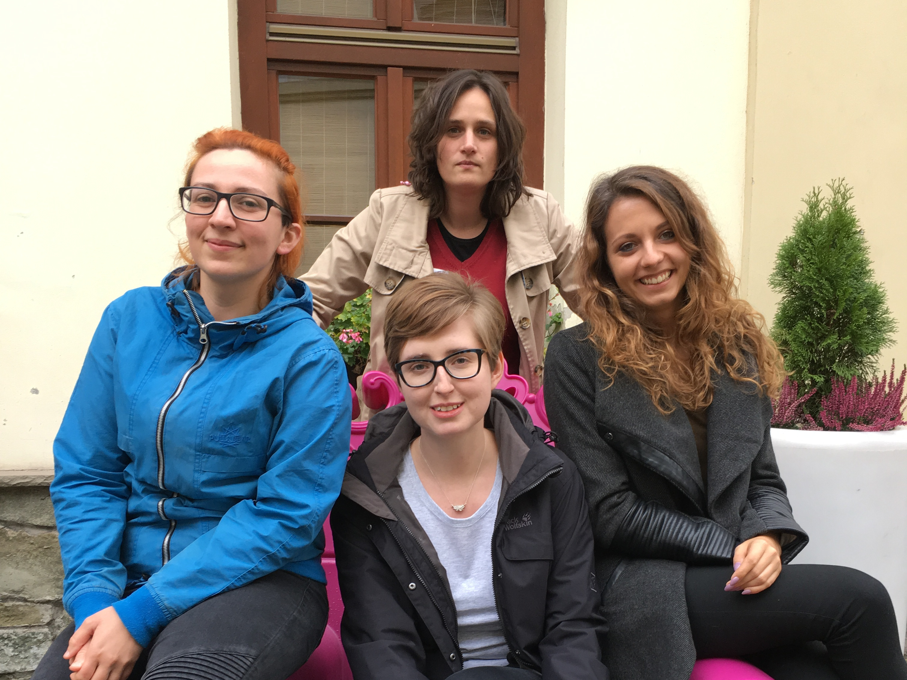

Pokaż się z najlepszej strony
Jak przygotować swój profil do pracy w IT
Agnieszka Małaszkiewicz at Fractal Soft
Software Evangelist

Portfolio
Talk is cheap. Show me the code.
- Linus Torvalds

Agnieszka Małaszkiewicz
agnieszka (at) fractalsoft (dot) org